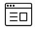

Getting Started
The Keyman App lets you type in over 600 languages. To get started, here are some helpful hints:
| Keyboard Keys (Keyboard Present) |
|
|---|---|
| Install or select another language/keyboard | |
 |
Hide the keyboard |
| Backspace | |
 |
Return |
 |
Shift key. Touch-and-hold this key to access the CTRL, ALT and CTRL ALT keys (which can access additional key layers) |
 |
Keys with a small dot in the top right corner indicate a touch-hold key. Access further functionality by touch-holding the key |
| Toolbar Icons | |
 |
Share your text via Mail, Text, Facebook or Twitter |
|  | Open the Keyman Browser (Pro Edition) |
| Open the menu for additional options | |
| Adjust the font size | |
| Delete all current text | |
 |
Open the initial setup screen |
 |
Load this help page |
Switching between Keyboards
To switch keyboards, follow these steps:
Step 1)
With the keyboard visible, touch the globe key:
This will bring up a list of all currently installed languages (the default is English USA). If you have already downloaded additional languages, they will appear here. Simply select them and the keyboard will re-appear with the new language.
If you haven't installed any languages as yet, touch the + button in the top right corner of your screen.
Step 2)
A list of all available languages will appear. Scroll through this list until you find the language you want to install. Some languages may have multiple keyboards - for example we have 10 different Tamil keyboards.
Select the language and keyboard you want to install - a popup will ask for confirmation, hit the Download button.
Step 3)
Once the download is complete, the new keyboard will be selected. Touch the Done button on the top right corner of your screen and the new keyboard will appear.
Installing Fonts (iOS 7 onwards)
Some keyboards require special fonts that do not come standard with your iPhone or iPad. For keyboards that use these fonts, the Keyman app will provide a download of the font to install onto your device, meaning all apps will be able to correctly display the font. To install the font, touch Install.
You will then be taken to your device settings, and asked to install a profile for the font. Touch Install.
Then Install again in the Consent page.
Once the profile is installed, touch Done.
And then Touch now to return to Keyman.
The font is now successfully installed, and will display correctly throughout your device!
Installing Custom Keyboards
Step 1) Click the link to your custom keyboard json file. (Note: typing the link into your browser URL bar won't work, you will need to include the link in a web page or email)
Step 2) Click 'Download'. This will fetch the keyboard and font specified from the json file:
The keyboard may also prompt you to install a font -- you should click 'Install' and follow the steps:
Once the keyboard has been downloaded, you should be able to use it as normal.
To learn how to create a custom installable keyboard, click here.
Use the Keyman Browser (Pro Edition)
Step 1) Click the Keyman Browser button in the Keyman Pro app
Step 2) Enter the URL of a website to visit into the address bar, for example google.com Keyman Browser will load
the page and detect your language if it is present, and reformat it to show your language instead of square boxes.
Step 3) Use the bookmark button to save the current page for browsing later.
Step 4) Use the Globe icon to swap between languages.
Integrate Keyman with your App or Website
If you are interested in learning how Keyman can be integrated into your own app or website, visit www.keyman.com/engine
Further Help
For more information on Keyman, visit www.keyman.com